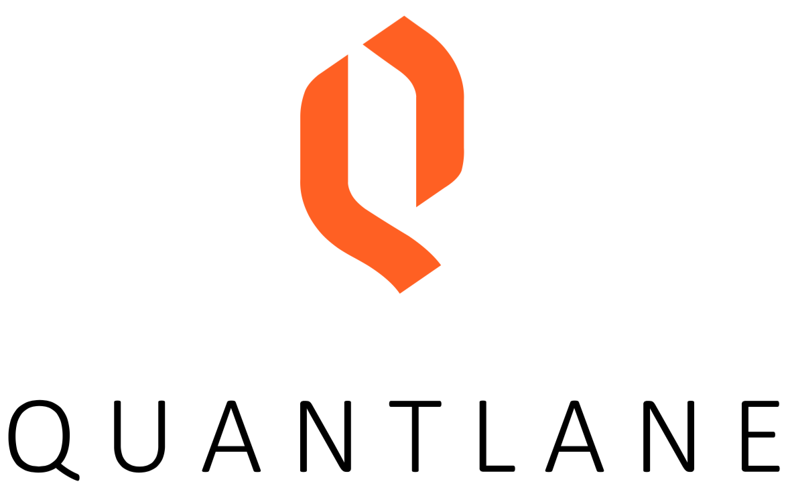
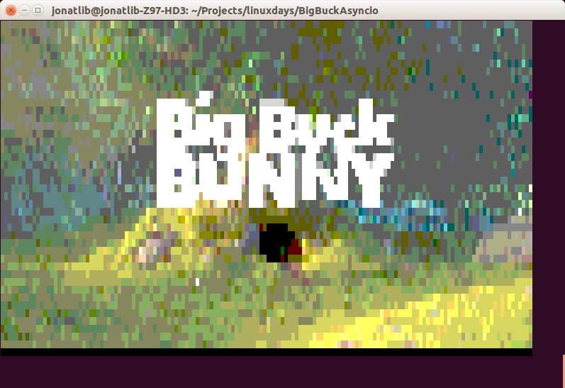

Big Buck Asyncio
Libor Jonát | LinuxDays 2016
Example
In this project is converted Big Buck Bunny video to ASCI art frames.

Goals of this workshop
- Show how to implement asyncio application
- Implement streaming TCP/IP server in asyncio
- All clients are represented with separate sessions objects
- Play cool video in telnet